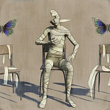
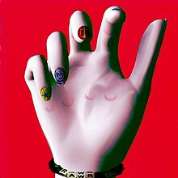

Populares
| 1. |  |
Throne | 547.871.489 | 3:11 | |
| 2. |  |
Can You Feel My Heart | 714.423.436 | 3:48 | |
| 3. | Top 10 staTues tHat CriEd bloOd | 10.135.766 | 4:00 | ||
| 4. |  |
Kingslayer (fear. BABYMETAL) | 260.859.270 | 3:40 | |
| 5. | DArkSide | 111.856.391 | 2:45 |
See more
Discografía
DARKSIDE
1999
THRONE
2002
KINGSLAYER
2004
A BULLET W/ MY NAME ON
2016
Top 10 statues that cried blood
2019

STRANGERS
2024

LosT
1998
r.i.p. (duskcore remix)
2014
Incluye a...
DARKSIDE
1999
THRONE
2002
KINGSLAYER (fear. BABYMETAL)
2004
KINGSLAYER (fear. BABYMETAL)
2004
KINGSLAYER (fear. BABYMETAL)
2004
KINGSLAYER (fear. BABYMETAL)
2004
KINGSLAYER (fear. BABYMETAL)
2004
KINGSLAYER (fear. BABYMETAL)
2004